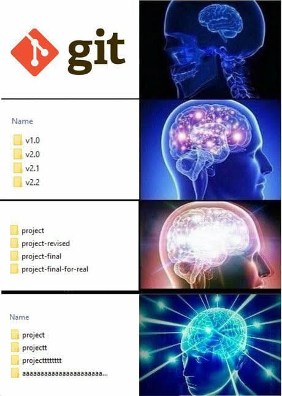
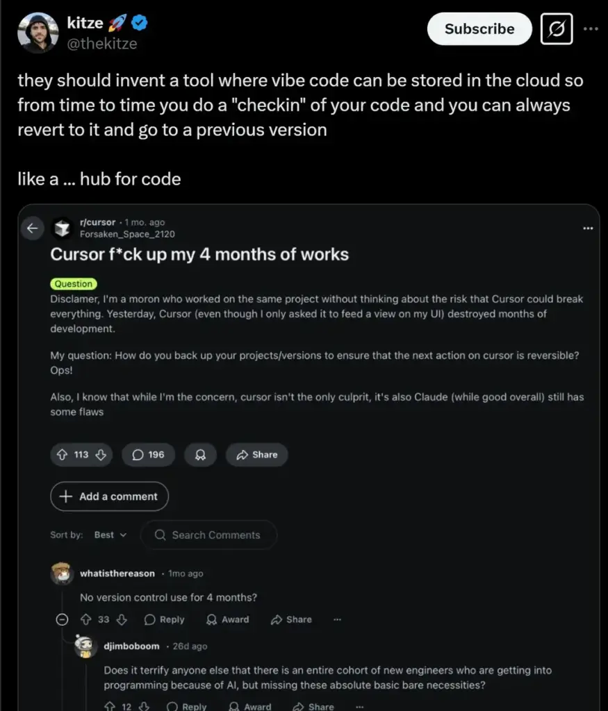
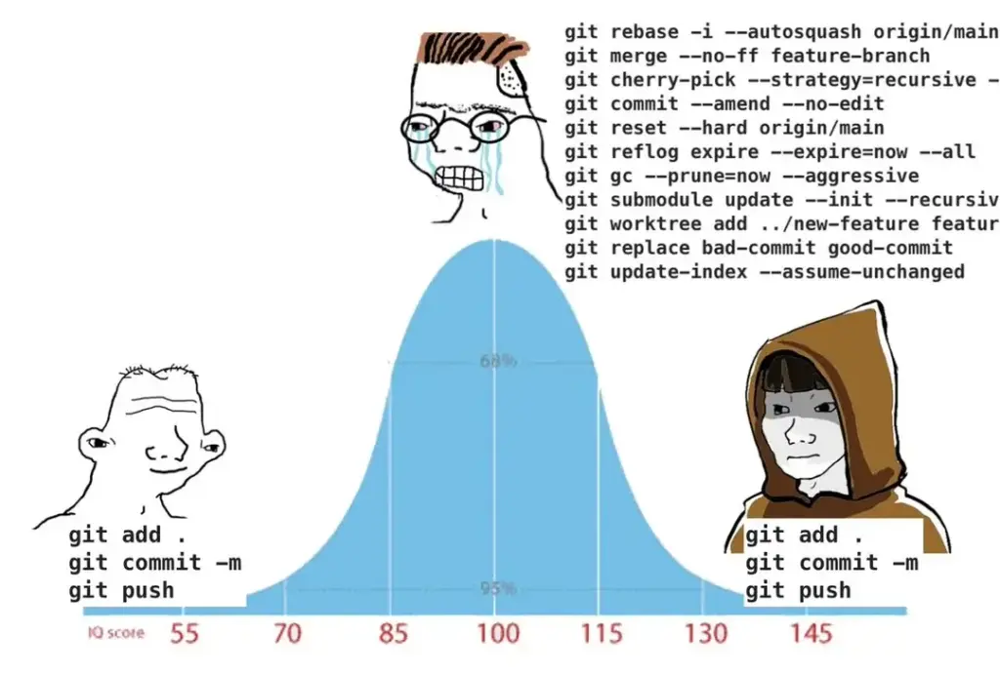
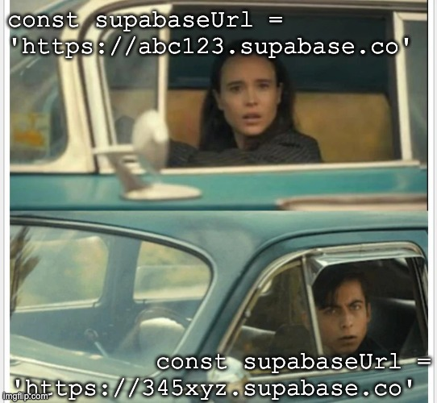
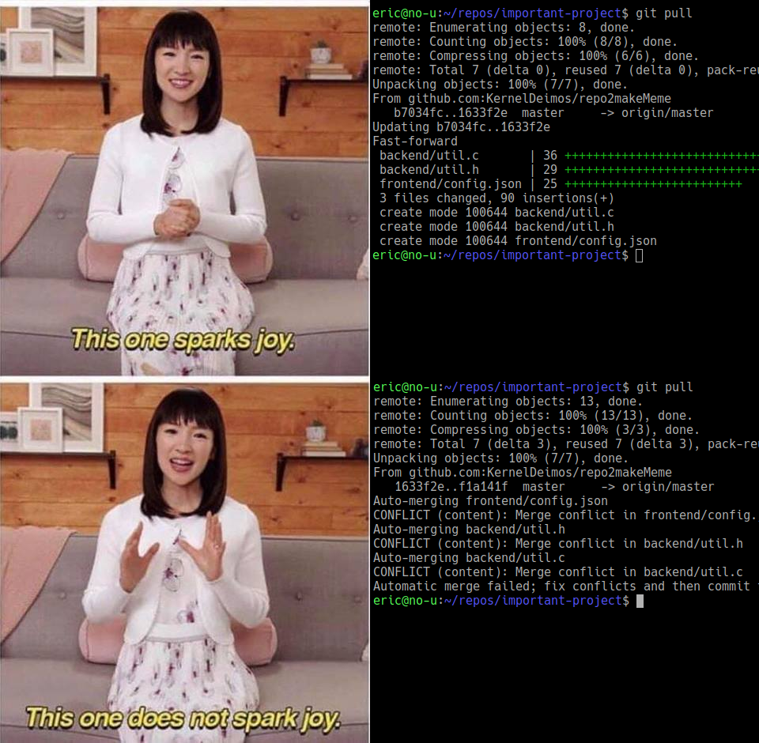
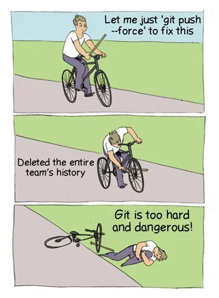
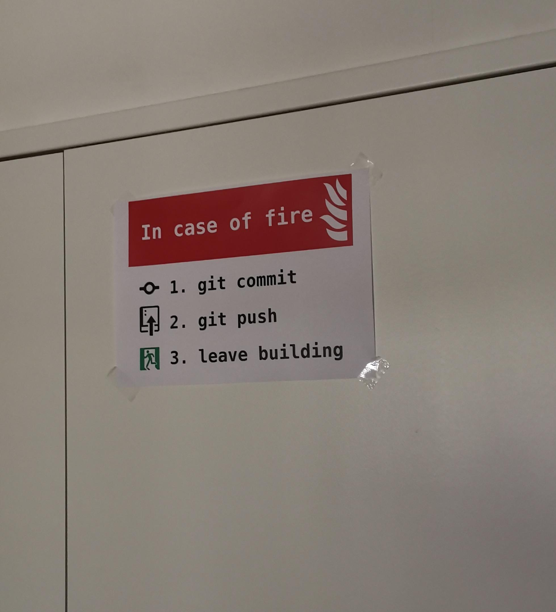

Terminal-first · Collaborating with AI
Enough Git and GitHub to collaborate while AI writes the code.
The AI runs the mechanics now. Your job is judgment.
Why we need this
Everyone has lived at the bottom of this brain: project-final-for-real. That's keeping track of your work without Git — and there's a much better way.

The version-control tool on your laptop. It records every change as a checkpoint you can inspect, trust, or throw away.
The website where the team gathers around that record — pull requests, issues, and status, all in one place.
You'll use both — they're just not the same thing.
Meanwhile, on the internet
A tool to store your code in the cloud, check in versions, and revert anytime — a hub for code, if you will. It exists. It's GitHub. The reply underneath is what happens without it: four months of work, gone.

The split
| Thing | Git or GitHub? |
|---|---|
git status , git commit | Git · local |
the .git folder | Git · local |
.gitignore | Git · local |
| branches | Git, shown by GitHub |
| pull requests | GitHub |
| issues | GitHub |
| Actions / CI | GitHub |
| README badges | GitHub |
The mechanics
Vibecoding makes this easier
add, commit, push — beginners and wizards do the same three things. The scary middle is exactly what your AI handles for you.

The mechanics
A commit is a snapshot. A branch is a line of work. And every clone holds the whole thing.
Both copies hold the entire history — no central server. “Decentralized” just means GitHub is the copy everyone agrees to meet at, so push and pull simply sync the two.
Exercise 1
Clone an existing repo, let Claude make the change and open the PR, then review and merge on GitHub.
git clone the URL from GitHub's green “Code” button.No need to follow every detail yet — the point is to feel the whole shape once. We'll unpack branches, PRs, and rebasing over the next few slides.
Two people, one file
It happens constantly — two of you grab the same config and each points it somewhere different. Here's the moment, immortalized.

Before we make one on purpose
You both open config.js, change the same line to different values, and commit.
Git now has two truths for one line — it won't guess, so it stops and asks you. That's a conflict.
Exercise 2
That's a conflict. Git won't guess which version wins; it hands the decision to a human.
Tell the tool: “Resolve this so both intents are kept, then continue.”
Then read the diff.
Bringing branches back together
Two ways to fold a branch back in. Same destination, different-looking history.
Merge
Tie two branches together and keep the full history — sometimes with a merge commit.
Rebase
Replay your commits on top of the latest base, for a cleaner, linear history. Usually nicer for short-lived branches.
Know the words — and let the tool run it.
Why we prefer rebase
A clean fast-forward pull on top; the same pull as a wall of merge conflicts on the bottom. Rebasing onto the latest main keeps history tidy and linear — so day to day, it looks a lot more like the top.

An opinionated default
If you remember nothing else
main.Heavily simplified, but enough to work safely — drop it in an AGENTS.md so your agent follows it too.
--force. Almost everything in Git is undoable once it's committed — a force-push is the main way to lose work for good, including other people's. Be sure you truly need it before you (or your agent) reach for it.A cautionary tale
git push --force is the stick-in-your-own-spokes of version control. Almost nothing else in Git can do this much damage — be very sure before you reach for it.

Exercise 3
Before you request review
git switch yourself — just tell Claude Code: “try this in a branch so I can switch between them.”Branch strategy
main
Production-ready source of truth. The branch the world runs on.
staging
Pre-production. Where you test and integrate before release.
dev
The active integration branch where work comes together.
Small teams PR straight to main. Cautious teams run dev → staging → main. Match the ceremony to the risk.
A detail worth knowing
.gitignore — files Git pretends it can't seeGenerated junk, caches, local config, and logs — kept out of shared history.
Exercise 4
Workflows live in .github/workflows/*.yml and run on every push and PR.
Workshop safety briefing
git commit, git push, leave the building. It's a joke — but it's the literal reason we push: your work should live on GitHub, not only on the laptop that's currently on fire.

The one habit
Run these before you trust yourself, before you trust the AI, and before you ask anyone to review your work.